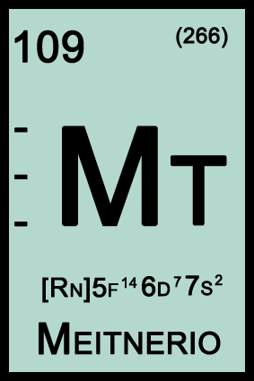

|  |
|
The Meitnerium is a chemical element in the periodic table with the symbol Mt and atomic number 109 (109 protons and 109 electrons) whose atomic mass is [268] u. It is a synthetic element whose most stable isotope is the Mt-266 with a half-life of 3.4 milliseconds. It is a transition metal of group 9 of the Periodic Classification of Elements, probably solid at room temperature. It does not exist in the earth's crust and no known application.
History: The Meitnerium was first synthesized on August 29, 1982 by a research team [found on Brazilian territory, but by a German team led by Peter Armbruster and Gottfried Münzenberg, in the GSI (Gesellschaft für Schwerionenforschung) laboratory of the Institute for Research on Heavy Ions in Darmstadt. The team bombed the Bi-209 with Fe-58 using a nuclear accelerator. The creation of this element has demonstrated that nuclear fusion techniques can be used to produce new heavy elements. Nomenclature: The meticulous name was suggested to honor Austrian physicist Lise Meitner, a pioneer along with Otto Hahn in the development of nuclear fission, a technique that allowed the creation of atomic bombs and the construction of nuclear power plants for thermoelectric power generation. The name was given in 1977 by IUPAC, formerly known as the Unnilennium (Une). Oxidation states / Compounds: No compound of this element is known yet, but apparently it has +4 oxidation state. |